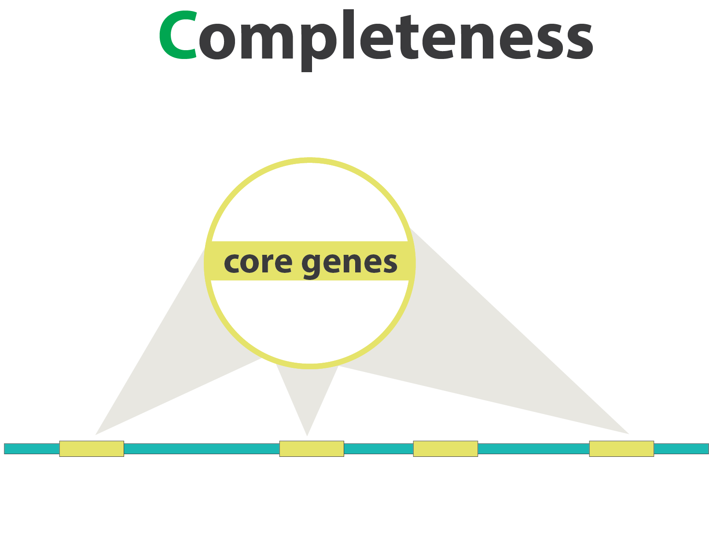
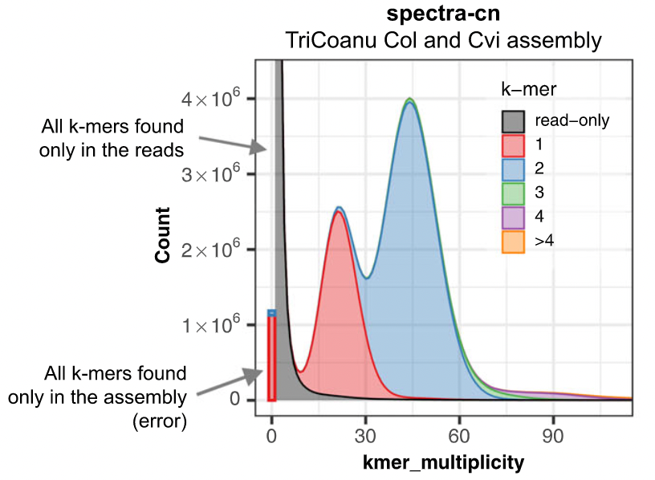
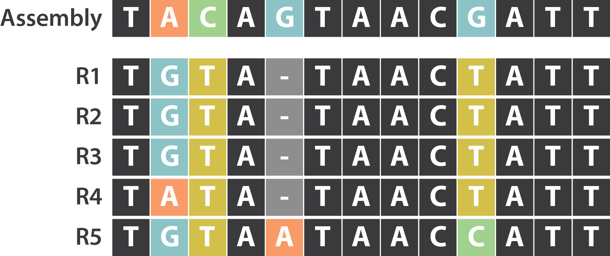

Genome assembly quality control.
Contributors
Questions
Assembly: Is my genome assembly ready for scaffolding?
Annotation: Is my genome assembly ready for structural annotation?
Genome assembly quality control, or “the 3C”
.image-100[ ]
.image-30[ ]
Contiguity
.pull-left[
Desire
- Fewer sequences
- Longer sequences ]
.pull-right[ Metrics:
- Number of sequences
- Average sequences length
- Median sequences length
- Minimum and maximum sequences length
- N50, NG50, L50, LG50
- GC content
- Number and proportion of bases that are N
]
Sequences, i.e. a set of contigs and/or scaffolds
N50 & L50
.left[ N50: given a set of sequences of varying lengths, the N50 is defined as the length L of the shortest contig for which longer and equal length contigs cover at least 50% of the assembly.
L50: given a set of sequences of varying lengths, the L50 is defined as count of smallest number of sequences whose length sum makes up 50% of the assembly. ]
N50 describes a sequence length whereas L50 describes a number of sequences.
N50 & L50
.pull-left[ Example:
- Genome size = 100
- Sequence sorted by size list L = (25, 10, 10, 8 , 7, 7 , 6 , 5, 5, 5, 5, 3, 2, 2 ) = 100
- 50% of the total length is contained within sequences of at least 8bp: 25 + 10 + 10 + 8 ≥ 50 ]
.image-100[ ]
N50 = 8 and L50 = 4
.footnote[Alhakami, H., Mirebrahim, H., & Lonardi, S. (2017). A comparative evaluation of genome assembly reconciliation tools. Genome biology, 18(1), 1-14.]
N50 & L50
However, the theses statistics may not reflect some assembly improvements. If we connect two sequences longer than N50 or connect two sequences shorter than N50, N50 is not changed. N50 is only improved if we connect a sequence shorter than N50 and a sequence longer than N50.
.image-40[ ]
Nx curve
« 50 » is a single point on the Nx curve. The entire Nx curve in fact gives us a better sense of contiguity.
.pull-left[
 ]
]
.pull-right[ ]
QUAST - A tool to evaluate genome assemblies
- QUAST: for genome assemblies.
- MetaQUAST: for metagenomic datasets.
- QUAST-LG: for large genomes (e.g., mammalians).
- rnaQUAST: for RNAseq.
- Icarus: an interactive visualizer for these tools.
It also includes:
- Reads mapping (mi-assemblies evaluation).
- Kmer representation (KMC)
- Structural prediction modules (GeneMark, GlimmerHMM, Barrnap and BUSCO).
- For metagenomics dataset: MetaGeneMark, Krona tools, BLAST, and SILVA 16S rRNA database.
.image-30[  ]
Types of completeness
- Assembly size
- Known vs. unknown nucleotides
- “Core” genes
- Assembly kmer content
- Reads mapping and assembly coverage
Assembly size vs estimated
Proportion of the original genome represented by the assembly:
.image-100[ ]
“*” it’s an estimation, so not perfect. See to find methods to determine the genome size.
Known vs. unknown nucleotides
Proportion of A, T, G, C versus N (unknown nucleotide).We expect an assembly without unknown nucleotides (N).
“Core” genes
.pull-left[ Quantitative assessment of genome assembly based on evolutionarily informed expectations of gene content from near-universal single-copy orthologs. .image-70[ ] ] .pull-right[ .image-70[ ]]
.footnote[Tips: Reference databases are constructed using known genomes. Species with few/no close genomes available can have very bad scores.]
Core genes evaluation software
BUSCO: Assessing genome assembly and annotation completeness with Benchmarking Universal Single-Copy Orthologs
.pull-left[ .image-70[ ]]
.pull-right[ .image-60[ ]]
Eukaryota: 255 single copy from 70 species; Arthropoda: 1013 single copy from 90 species; Fungi: 758 single copy from 549 species
.footnote[Waterhouse, R. M., Zdobnov, E. M. & Kriventseva, E. V. Correlating Traits of Gene Retention, Sequence Divergence, Duplicability and Essentiality in Vertebrates, Arthropods, and Fungi. Genome Biol Evol 3, 75–86 (2011).]
BUSCO limitations
The value of the BUSCO is only as good as its reference database.
Example with BUSCO Eukaryotic set: .pull-left[ .image-70[ ]] .pull-right[ .image-70[ ]]
.footnote[Saary, P., Mitchell, A. L. & Finn, R. D. Estimating the quality of eukaryotic genomes recovered from metagenomic analysis with EukCC. Genome Biol 21, 244 (2020).]
BUSCO limitations
The use of transcriptome alignment of a closely related species or a de novo RNA-Seq assembly of the same species can be another proxy to assess the completeness of the assembly and adress BUSCO limitations.
Assembly kmer content
The aim is to check assembly coherence against the content within reads that were used to produce the assembly. Basically, how many elements of each frequency on the read’s spectrum ended up being not included in the assembly, included once, included twice etc.
- Merqury or KAT
- Histogram is build with read kmer content.
K-mer spectrum plots
.pull-left[ .image-70[ ]] .pull-right[ .image-70[  ]]
.footnote[Rhie, A., Walenz, B. P., Koren, S. & Phillippy, A. M. Merqury: reference-free quality, completeness, and phasing assessment for genome assemblies. Genome Biol 21, 245 (2020).]
Assembly kmer content - Homozygous genomes
.image-70[ ]
congratulations Good kmer representation of reads in the assembly
Assembly kmer content - Homozygous genomes
.image-70[ ]
Bad kmer representation of reads in the assembly
Assembly kmer content - Heterozygous genomes
.image-70[ ]
congratulations Good kmer representation of reads in the assembly
The lost content (the black peak) represents the half of the heterozygous content that is lost when bubbles are collapsed.
Assembly kmer content - Heterozygous genomes
.image-80[ ]
Bad kmer representation of reads in the assembly
Reads mapping and assembly coverage
- Proportion of mapped vs. unmapped reads i.e. proportion of missing parts in the assembly
- Coverage in terms of redundancy (A): number of reads that align to, or “cover,” a known reference.
- Coverage in terms of the percentage coverage of a reference by reads (B): E.g. if 90% of a reference is covered by reads (and 10% not) it is a 90% coverage.
.image-60[
 ]
]
.image-30[ ]
Mistakes into the assembly
** Proportion of the assembly that is free from mistakes**
- Indels / SNPs
- Mis-joins
- Repeat compressions
- Unnecessary duplications
- Rearrangements
→ Align back reads to the assembly and check for inconsistencies
SNP / indels errors
.image-80[  ]
Other mis-assemblies
.image-80[ ]
Other mis-assemblies
.image-80[ ]
Switch and hamming errors (phased assemblies)
.pull-left[ .image-70[ ] In red, heterozygous locus from second haplotype. In blue, heterozygous locus from first haplotype. ]
.pull-right[
- Switch error: a change from one parental allele to another parental allele on a contig. This terminology has been used for measuring reference-based phasing accuracy for two decades. A haplotig is supposed to have no switch errors.
- Yak hamming error: an allele not on the most supported haplotype of a contig. Its main purpose is to test how close a contig is to a haplotig. The yak definition is not widely accepted. The hamming error rate is arguably less important in practice. ]
.footnote[http://lh3.github.io/2021/04/17/concepts-in-phased-assemblies]
Evaluation against reference genome
.image-30[ ]
.pull-left[ .left[ Dot plots are widely used to quickly compare 2 sequence sets. They provide a synthetic overview of:
- Similarity
- Specificity
- Highlighting repetitions, breaks and inversions. ]
.image-50[ ] ]
.pull-right[ .left[ A non-exhaustive list of tools for making dot plots:
- MUMmer dotplot
- Chromeister
- D-genies (not yet available into Galaxy) ]
.image-50[
 ]
]
]
]
Tips
-
The quality of an assembly is often validated by using other data from the same individual or from other individuals (RNA-Seq alignment, Hi-C alignment, DNA-Seq alignment,…).
-
The positions of the telomeric repeats in the chromosome assemblies are also of interesting to evaluate the correctness.
-
The identification of organelles (mitochondria, chloroplast,…) can also inform us about the quality of the assembly in terms of completness. However, the structure of the organelles may lead the assembler to think that they are repeats and he discards them.
-
In the case of diploid organisms, one of the classical problems of assemblies is the conservation of the two haplotypes. We obtains particular BUSCO / kmer / assembly size metrics that can be corrected by removing, “purging”, the haplotigs.
Key Points
- We learned that it is essential to control the quality of an assembly
- We learned that there are several quality criteria and tools to enable this assessment
- Certain quality criteria are expected at the time of publication
Thank you!
This material is the result of a collaborative work. Thanks to the Galaxy Training Network and all the contributors! Tutorial Content is licensed under
Creative Commons Attribution 4.0 International License.
Tutorial Content is licensed under
Creative Commons Attribution 4.0 International License.